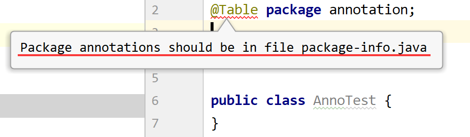
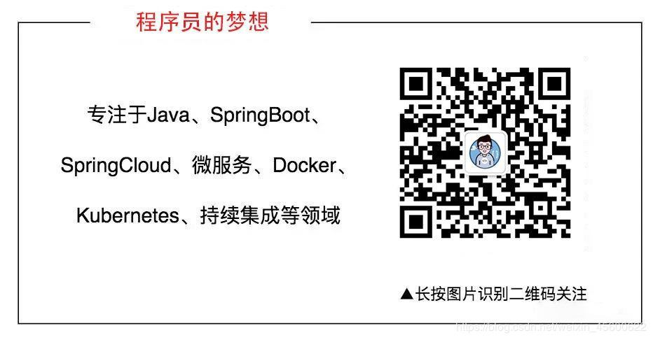

原文连接:https://www.cnblogs.com/cxydmx/p/11716081.html
目录：
一. 什么是Annotation
二. Annotation的作用
- 2.1 编译器使用到的注解
- 2.2 .class文件使用到的注解
- 2.3 运行期读取的注解
三. 定义Annotation
- 3.1 元注解
- 3.2 定义注解小结
四. Annotation处理
五. 总结
一. 什么是Annotation
我们在平时的开发过程中看到很多如@Override，@SuppressWarnings，@Test等样式的代码就是注解，注解是放到类、构造器、方法、属性、参数前的标记。
二. Annotation的作用
给某个类、方法..添加了一个注解，这个环节仅仅是做了一个标记，对代码本身并不会造成任何影响，需要后续环节的配合，需要其他方法对该注解赋予业务逻辑处理。就如同我们在微信上发了一个共享定位，此时并没有什么用，只有当后面其他人都进入了这个共享定位，大家之间的距离才能明确，才知道该怎么聚在一起。
注解分为三类：
2.1 编译器使用到的注解
如@Override，@SuppressWarnings都是编译器使用到的注解，作用是告诉编译器一些事情，而不会进入编译后的.class文件。
@Override：告诉编译器检查一下是否重写了父类的方法；
@SuppressWarnings：告诉编译器忽略该段代码产生的警告；
对于开发人员来说，都是直接使用，无需进行其他操作
2.2 .class文件使用到的注解
需要通过工具对.class字节码文件进行修改的一些注解，某些工具会在类加载的时候，动态修改用某注解标注的.class文件，从而实现一些特殊的功能，一次性处理完成后，并不会存在于内存中，都是非常底层的工具库、框架会使用，对于开发人员来说，一般不会涉及到。
2.3 运行期读取的注解
一直存在于JVM中，在运行期间可以读取的注解，也是最常用的注解，如Spring的@Controller，@Service，@Repository，@AutoWired，Mybatis的@Mapper，Junit的@Test等，这类注解很多都是工具框架自定义在运行期间发挥特殊作用的注解，一般开发人员也可以自定义这类注解。
三. 定义Annotation
我们使用@interface来定义一个注解
/**
* 定义一个Table注解
*/
public @interface Table {
String value() default "";
}
/**
* 定义一个Colum注解
*/
public @interface Colum {
String value() default "";
String name() default "";
String dictType() default "";
}这样就简单地将一个注解定义好了
我们上面定义的注解主要用到了String类型，但实际上还可以是基本数据类型（不能为包装类）、枚举类型。
注解也有一个约定俗成的东西，最常用的参数应该命名为value，同时一般情况下我们都会通过default参数设置一个默认值。
但这样是不是就满足于我们的使用了呢，我想把@Table注解仅用于类上，@Colum注解仅用于属性上，怎么办？而且开始提到的三类注解，一般开发人员用的都是运行期的注解，那我们定义的是吗？
要回答这些问题，就需要引入一个概念“元注解”。
3.1 元注解
可以修饰注解的注解即为元注解，Java已经定义了一些元注解，我们可以直接使用。
3.1.1 @Target
顾名思义指定注解使用的目标对象，参数为ElementType[]
public @interface Target {
/**
* Returns an array of the kinds of elements an annotation type
* can be applied to.
* @return an array of the kinds of elements an annotation type
* can be applied to
*/
ElementType[] value();
}而下面是ElementType枚举中定义的属性，不设置Target的时候，除了TYPE_PARAMETER，TYPE_USE，其他地方都相当于配置上了。
public enum ElementType {
/** 通过ElementType.TYPE可以修饰类、接口、枚举 */
TYPE,
/** 通过ElementType.FIELD可以修饰类属性 */
FIELD,
/** 通过ElementType.METHOD可以修饰方法 */
METHOD,
/** 通过ElementType.PARAMETER可以修饰参数（如构造器或者方法中的） */
PARAMETER,
/** 通过ElementType.CONSTRUCTOR可以修改构造器 */
CONSTRUCTOR,
/** 通过ElementType.LOCAL_VARIABLE可以修饰方法内部的局部变量 */
LOCAL_VARIABLE,
/** 通过ElementType.ANNOTATION_TYPE可以修饰注解 */
ANNOTATION_TYPE,
/** 通过ElementType.PACKAGE可以修饰包 */
PACKAGE,
/**
* 可以用在Type的声明式前
*
* @since 1.8
*/
TYPE_PARAMETER,
/**
* 可以用在所有使用Type的地方（如泛型、类型转换等）
*
* @since 1.8
*/
TYPE_USE
}我们主要说一下ElementType.PACKAGE和1.8添加的ElementType.TYPE_PARAMETER和ElementType.TYPE_USE
ElementType.PACKAGE
@Target(ElementType.PACKAGE)
public @interface Table {
String value() default "";
}含义是用来修饰包，但我们用来修饰包的时候却提示错误

我们按照提示创建package-info.java文件，这里需要注意一下，通过IDE 进行new --> Java Class是创建不了的，需要通过new File文件创建
@Table
package annotation;
class PackageInfo {
public void hello() {
System.out.println("hello");
}
}
ElementType.TYPE_PARAMETER和ElementType.TYPE_USE
这两个一起说，因为它们有相似之处。都是Java1.8后添加的
@Target(ElementType.TYPE_USE)
public @interface NoneEmpty {
String value() default "";
}
@Target(ElementType.TYPE_PARAMETER)
public @interface NoneBlank {
String value() default "";
}
很明显使用ElementType.TYPE_PARMETER修饰的注解@NoneBlank无法在泛型使用的时候编译通过，仅能用于类的泛型声明，而通过ElementType.TYPE_USE修饰的注解@NoneEmpty可以。
3.1.2 @Retention
可以用于定义注解的生命周期，参数为枚举RetentionPolicy，包括了SOURCE,CLASS,RUNTIME
@Retention(RetentionPolicy.RUNTIME)
@Target(ElementType.ANNOTATION_TYPE)
public @interface Retention {
/**
* Returns the retention policy.
* @return the retention policy
*/
RetentionPolicy value();
}
public enum RetentionPolicy {
/**
* 仅存在于源代码中，编译阶段会被丢弃，不会包含于class字节码文件中.
*/
SOURCE,
/**
* 【默认策略】，在class字节码文件中存在，在类加载的时被丢弃，运行时无法获取到
*/
CLASS,
/**
* 始终不会丢弃，可以使用反射获得该注解的信息。自定义的注解最常用的使用方式。
*/
RUNTIME
}3.1.3 @Documented
表示是否将此注解的相关信息添加到javadoc文档中
3.1.4 @Inherited
定义该注解和子类的关系，使用此注解声明出来的自定义注解，在使用在类上面时，子类会自动继承此注解，否则，子类不会继承此注解。注意，使用@Inherited声明出来的注解，只有在类上使用时才会有效，对方法，属性等其他无效。
@Target(ElementType.TYPE)
@Retention(RetentionPolicy.RUNTIME)
@Inherited
public @interface Person {
String value() default "man";
}
@Person
public class Parent {
}
//子类也拥有@Person注解
class Son extends Parent {
}3.2 定义注解小结
用@interface定义注解
可以添加多个参数，核心参数按约定用value，为每个参数可以设置默认值，参数类型包括基本类型、String和枚举
可以使用元注解来修饰注解，元注解包括多个，必须设置@Target和@Retention，@Retention一般设置为RUNTIME。
四. Annotation处理
我们前面已经提到光配置了注解，其实没有作用，需要通过相应的代码来实现该注解想要表达的逻辑。
注解定义后也是一种class，所有的注解都继承自java.lang.annotation.Annotation，因此，读取注解，需要使用反射API。
//定义的注解
@Target(ElementType.FIELD)
@Retention(RetentionPolicy.RUNTIME)
public @interface Colum {
String value() default "";
//用于表示某个属性代表的中文含义
String name() default "";
}用注解@Colum来修饰某个类的属性
public class Person {
@Colum(name = "姓名")
private String name;
@Colum(name = "性别")
private String gender;
@Colum(name = "年龄")
private int age;
@Colum(name = "住址")
private String address;
public String getName() {return name;}
public void setName(String name) {this.name = name;}
public String getGender() {return gender;}
public void setGender(String gender) {this.gender = gender;}
public int getAge() {return age;}
public void setAge(int age) {this.age = age;}
public String getAddress() {return address;}
public void setAddress(String address) {this.address = address;}
}通过反射读取这个类的所有字段的中文含义，并保存到list中，然后打印出来
public static void main(String[] args) throws ClassNotFoundException {
List<String> columNames = new ArrayList<>();
Class clazz = Class.forName("annotation.Person");
//获取Person类所有属性
Field[] fields = clazz.getDeclaredFields();
for (Field field : fields){
//获取该属性的Colum注解
Colum colum = field.getAnnotation(Colum.class);
//或者可以先判断有无该注解
field.isAnnotationPresent(Colum.class);
//将该属性通过注解配置好的中文含义取出来放到集合中
columNames.add(colum.name());
}
//打印集合
columNames.forEach((columName) -> System.out.println(columName));
}结果如下：
姓名
性别
年龄
住址比如我们有一些常见的应用场景，需要把网站上的列表导出成excel表格，我们通过注解的方式把列名配置好，再通过反射读取实体需要导出（是否需要导出，也可通过注解配置）的每个字段的值，从而实现excel导出的组件。
五. 总结
本文只是抛砖引玉地讲解了注解的基本概念，注解的作用，几种元注解的功用以及使用方法，并通过一个简单的例子讲解了一下注解的处理，并不全面，文中通过Field讲解了注解的基本Api，但注解还可以修饰类、构造器、方法等，也有相对应的注解处理方法，大家可自行查一下API手册相关内容，大同小异，有不对之处，请批评指正，望共同进步，谢谢！
关注微信公众号【程序员的梦想】，专注于Java，SpringBoot，SpringCloud，微服务，Docker以及前后端分离等全栈技术。
